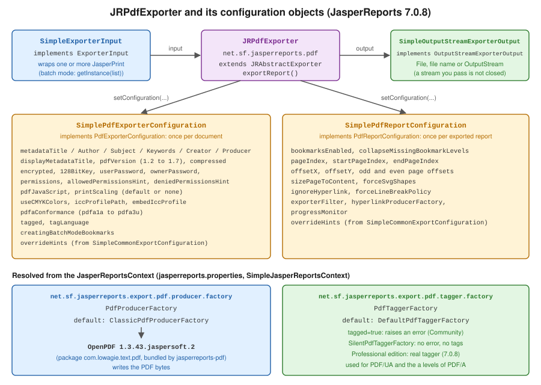

PDF Export Configuration
|
This content was generated with the assistance of AI and should be verified against the official documentation before being relied on in production. |
Baseline date: 2026-10-09. A filled report is a JasperPrint: pages of positioned elements with no format yet. Turning it
into a PDF is the job of the exporter, and almost everything that makes a PDF a PDF (its title, its encryption, its
conformance level, whether a screen reader can follow it) is decided there, not in the template. This page covers the
JasperReports 7.0.8 PDF exporter and the two configuration objects that drive it, using the invoice summary of the
Bookshelf Billing service as the running example. The design of the template, the data sources and the Maven setup are
covered by other pages, see JasperReports Architecture & Lifecycle,
JRXML Report Design and
Getting Started with Spring Boot.
The examples were compiled and run with Java 21 as the language level (maven.compiler.release 21), JasperReports
7.0.8, jasperreports-pdf 7.0.8, jasperreports-fonts 7.0.8, jasperreports-jdt 7.0.8 and Bouncy Castle 1.86. The
resulting PDF files were opened and inspected with the Python library pypdf. Results that come from that run, and that
the official documentation does not state, are marked as such. The PDF/A files were not validated with veraPDF, so none
of the PDF/A statements below is a conformance certificate.
The exporter API in 7.0
Older JasperReports material, including the books this section consulted, drives an exporter with a parameter map:
JRExporterParameter and JRPdfExporterParameter constants passed to setParameter, and iText 1.x or 2.1.7 behind the
PDF output. None of that exists in 7.0.8. The exporter is configured with typed objects, and PDF generation lives in its
own artifact, jasperreports-pdf, under the package net.sf.jasperreports.pdf.
| Concern | JasperReports 7.0.8 API |
|---|---|
The exporter |
|
What to export |
|
Where to write |
|
Per-document settings |
|
Per-report settings |
|
Defaults for everything above |
Configuration properties named |

The "per-document" and "per-report" split follows what the output is made of. A PDF file has one encryption
dictionary, one set of metadata and one conformance level, so those live in SimplePdfExporterConfiguration. A
JasperPrint can be one of several reports exported into the same file (batch mode), and each of them has its own page
range, page offsets and bookmark setting, so those live in SimplePdfReportConfiguration. Both extend a base class that
adds overrideHints, discussed below.
Two shortcuts exist for the case where defaults are enough. JasperExportManager.exportReportToPdf(print) returns the
bytes, and exportReportToPdfStream and exportReportToPdfFile write them elsewhere. In the run used for this page
the first returned a valid PDF with every setting at its default. As soon as one setting needs to change, build the
exporter yourself, as in the next section.
Derived from the JRPdfExporter API
and the SimplePdfExporterConfiguration API.
Dependencies
The PDF exporter is not in the core jasperreports artifact. Add jasperreports-pdf, and jasperreports-fonts for an
embeddable font (see below), and a compiler for the expressions, as described in
Getting Started with Spring Boot.
<dependencies>
<dependency>
<groupId>net.sf.jasperreports</groupId>
<artifactId>jasperreports</artifactId>
<version>7.0.8</version>
</dependency>
<dependency>
<groupId>net.sf.jasperreports</groupId>
<artifactId>jasperreports-pdf</artifactId>
<version>7.0.8</version>
</dependency>
<dependency>
<groupId>net.sf.jasperreports</groupId>
<artifactId>jasperreports-fonts</artifactId>
<version>7.0.8</version>
</dependency>
<dependency>
<groupId>net.sf.jasperreports</groupId>
<artifactId>jasperreports-jdt</artifactId>
<version>7.0.8</version>
</dependency>
<!-- only needed when the exporter encrypts the PDF, see "Encryption and permissions" -->
<dependency>
<groupId>org.bouncycastle</groupId>
<artifactId>bcprov-jdk18on</artifactId>
<version>1.86</version>
</dependency>
</dependencies>jasperreports-pdf brings OpenPDF as a regular compile dependency, in the Jaspersoft build 1.3.43.jaspersoft.2. That
is the library that writes the PDF bytes, see The OpenPDF producer.
Derived from the JasperReports README and the
jasperreports-pdf artifact on Maven Central.
A first export
The template is a v7 JRXML invoice summary: namespace-free, with kind on each element, and with the title and summary
as bands directly under the report. Its default style names the font DejaVu Sans, which jasperreports-fonts
provides as a font extension that is embedded in the PDF. That choice matters for PDF/A, and the reason is in
PDF/A archival output.
<jasperReport name="invoice-summary" language="java" pageWidth="595" pageHeight="842"
columnWidth="515" leftMargin="40" rightMargin="40" topMargin="40" bottomMargin="40">
<style name="Base" default="true" fontName="DejaVu Sans" fontSize="10"/>
<parameter name="CUSTOMER" class="java.lang.String"/>
<field name="title" class="java.lang.String"/>
<field name="quantity" class="java.lang.Integer"/>
<field name="amount" class="java.math.BigDecimal"/>
<variable name="total" calculation="Sum" class="java.math.BigDecimal">
<expression><![CDATA[$F{amount}]]></expression>
</variable>
<title height="60">
<element kind="staticText" x="0" y="0" width="515" height="30" fontSize="18" bold="true">
<text><![CDATA[Bookshelf Billing: invoice summary]]></text>
</element>
<element kind="textField" x="0" y="34" width="515" height="20">
<expression><![CDATA["Customer: " + $P{CUSTOMER}]]></expression>
</element>
</title>
<columnHeader height="22">
<element kind="staticText" x="0" y="0" width="300" height="20" bold="true">
<text><![CDATA[Title]]></text>
</element>
<element kind="staticText" x="300" y="0" width="60" height="20" bold="true" hTextAlign="Right">
<text><![CDATA[Qty]]></text>
</element>
<element kind="staticText" x="365" y="0" width="150" height="20" bold="true" hTextAlign="Right">
<text><![CDATA[Amount]]></text>
</element>
</columnHeader>
<detail>
<band height="20">
<element kind="textField" x="0" y="0" width="300" height="18">
<expression><![CDATA[$F{title}]]></expression>
</element>
<element kind="textField" x="300" y="0" width="60" height="18" hTextAlign="Right">
<expression><![CDATA[$F{quantity}]]></expression>
</element>
<element kind="textField" x="365" y="0" width="150" height="18" hTextAlign="Right" pattern="#,##0.00">
<expression><![CDATA[$F{amount}]]></expression>
</element>
</band>
</detail>
<summary height="30">
<element kind="textField" x="365" y="6" width="150" height="20" bold="true" hTextAlign="Right" pattern="#,##0.00">
<expression><![CDATA[$V{total}]]></expression>
</element>
</summary>
</jasperReport>The data is a JavaBean. A Java record is not accepted by JRBeanCollectionDataSource in 7.0.8: the run for this page
failed when the lines were records, and succeeded with the class below.
package billing;
import java.math.BigDecimal;
/** A JavaBean: JRBeanCollectionDataSource reads getters, and a Java record is not accepted. */
public class InvoiceLine {
private final String title;
private final int quantity;
private final BigDecimal amount;
public InvoiceLine(String title, int quantity, BigDecimal amount) {
this.title = title;
this.quantity = quantity;
this.amount = amount;
}
public String getTitle() {
return title;
}
public int getQuantity() {
return quantity;
}
public BigDecimal getAmount() {
return amount;
}
}The class below compiles the template once, fills it, and exports with whatever configuration the caller supplies. The
exporter is created for each call because it keeps per-export state in its fields. The parameter map is a HashMap:
Map.of(...) is rejected as the fill parameters in 7.0.8.
package billing;
import java.io.ByteArrayOutputStream;
import java.io.IOException;
import java.io.InputStream;
import java.util.HashMap;
import java.util.List;
import java.util.Map;
import net.sf.jasperreports.engine.JRException;
import net.sf.jasperreports.engine.JasperCompileManager;
import net.sf.jasperreports.engine.JasperFillManager;
import net.sf.jasperreports.engine.JasperPrint;
import net.sf.jasperreports.engine.JasperReport;
import net.sf.jasperreports.engine.data.JRBeanCollectionDataSource;
import net.sf.jasperreports.export.SimpleExporterInput;
import net.sf.jasperreports.export.SimpleOutputStreamExporterOutput;
import net.sf.jasperreports.pdf.JRPdfExporter;
import net.sf.jasperreports.pdf.SimplePdfExporterConfiguration;
import net.sf.jasperreports.pdf.SimplePdfReportConfiguration;
public final class InvoicePdfExporter {
private final JasperReport report;
public InvoicePdfExporter() throws JRException, IOException {
try (InputStream template = getClass().getResourceAsStream("/invoice-summary.jrxml")) {
this.report = JasperCompileManager.compileReport(template);
}
}
public JasperPrint fill(String customer, List<InvoiceLine> lines) throws JRException {
Map<String, Object> parameters = new HashMap<>(); // Map.of(...) is rejected by the fill
parameters.put("CUSTOMER", customer);
return JasperFillManager.fillReport(report, parameters, new JRBeanCollectionDataSource(lines));
}
/** A new exporter per call: the exporter keeps per-export state in its fields. */
public byte[] export(JasperPrint print, SimplePdfExporterConfiguration exporterConfig,
SimplePdfReportConfiguration reportConfig) throws JRException {
ByteArrayOutputStream out = new ByteArrayOutputStream();
JRPdfExporter exporter = new JRPdfExporter();
exporter.setExporterInput(new SimpleExporterInput(print));
exporter.setExporterOutput(new SimpleOutputStreamExporterOutput(out));
exporter.setConfiguration(exporterConfig);
if (reportConfig != null) {
exporter.setConfiguration(reportConfig);
}
exporter.exportReport();
return out.toByteArray();
}
}The five steps are always the same: create the exporter, set the input, set the output, set the configuration object or
objects, call exportReport(). setConfiguration is overloaded for the two configuration types, and both can be set on
the same exporter. A SimpleOutputStreamExporterOutput built from an OutputStream did not close that stream in the run
for this page, so the caller owns it. That is the behavior to rely on in a Spring controller that writes to the response
stream, and the controller should still close or flush it as the framework requires.
Derived from the SimpleExporterInput API
and the SimpleOutputStreamExporterOutput API.
Where a setting comes from
Every setting has up to four sources, from the broadest to the narrowest:
-
A configuration property in
jasperreports.propertiesor set on aJasperReportsContext, for examplenet.sf.jasperreports.export.pdf.compressed=true. These are the defaults, scoped globally or per context. -
A property on the report itself, as an exporter hint: a
<property name="..." value="..."/>element in the JRXML, for examplenet.sf.jasperreports.export.pdf.metadata.title. The hint travels with the template, so a report designer can give a template a title without a deployment. -
A setting on the configuration object that the code passes to the exporter.
-
A property on an individual element, which only a few properties accept (the tag language, for instance).
The reference of properties lists the scope of each property (global, context, report, element) and which ones are the
default of a configuration setting. The property names match the configuration setters, so the two are interchangeable:
setCompressed and net.sf.jasperreports.export.pdf.compressed, setPdfaConformance and
net.sf.jasperreports.export.pdfa.conformance, setTagged and net.sf.jasperreports.export.pdf.tagged, and so on.
The interesting question is what wins when a report hint and the configuration object disagree. The run for this page put a title and an author as hints in a template and a different title in the configuration object:
-
With no
overrideHintsset, the title from the configuration object won, and the author, which the object did not set, came from the hint. Only the settings the object actually sets take part in the override. -
With
setOverrideHints(false), the title from the template hint won. -
With
setOverrideHints(true), the result was the same as the default.
In practice: set what the service must always control (encryption, conformance, producer) in code, leave presentation
details such as the title to the template, and set overrideHints to false on the configuration object when the
template author should be able to override the service’s defaults.
Derived from the configuration reference and the
SimpleCommonExportConfiguration API.
Export profiles for Bookshelf Billing
The service needs a handful of recurring variations: an e-mailed document, a copy protected from editing, an archival copy and a print-shop copy. Keeping each as a named factory method makes the choice explicit at the call site and keeps the settings reviewable in one file. Every setting used here is explained in the sections that follow.
package billing;
import java.nio.file.Path;
import net.sf.jasperreports.pdf.SimplePdfExporterConfiguration;
import net.sf.jasperreports.pdf.type.PdfPermissionsEnum;
import net.sf.jasperreports.pdf.type.PdfPrintScalingEnum;
import net.sf.jasperreports.pdf.type.PdfVersionEnum;
import net.sf.jasperreports.pdf.type.PdfaConformanceEnum;
/** Named export profiles for the Bookshelf Billing documents. */
public final class PdfProfiles {
private PdfProfiles() {
}
/** Metadata, PDF 1.7 and object-stream compression: the profile for e-mailed documents. */
public static SimplePdfExporterConfiguration standard() {
SimplePdfExporterConfiguration config = new SimplePdfExporterConfiguration();
config.setMetadataTitle("Invoice summary");
config.setMetadataAuthor("Bookshelf Billing");
config.setMetadataSubject("Invoice summary for a customer");
config.setMetadataKeywords("invoice, bookshelf");
config.setMetadataCreator("Bookshelf Billing service");
config.setMetadataProducer("Bookshelf Billing 1.0");
config.setDisplayMetadataTitle(true);
config.setPdfVersion(PdfVersionEnum.VERSION_1_7);
config.setCompressed(true);
return config;
}
/** Encrypted with a 128-bit key and no user password: anyone may open it, only print and copy are allowed. */
public static SimplePdfExporterConfiguration restricted(String ownerPassword) {
SimplePdfExporterConfiguration config = standard();
config.setEncrypted(true);
config.set128BitKey(true);
config.setOwnerPassword(ownerPassword);
config.setPermissions(PdfPermissionsEnum.PRINTING.getPdfPermission()
| PdfPermissionsEnum.COPY.getPdfPermission());
return config;
}
/** PDF/A-2u: fonts embedded by the template, an sRGB output intent from the ICC profile file. */
public static SimplePdfExporterConfiguration archival(Path srgbProfile) {
SimplePdfExporterConfiguration config = new SimplePdfExporterConfiguration();
config.setMetadataTitle("Invoice summary");
config.setPdfaConformance(PdfaConformanceEnum.PDFA_2U);
config.setIccProfilePath(srgbProfile.toString());
return config;
}
/** CMYK colours through a CMYK ICC profile, no print scaling and a print dialog on open. */
public static SimplePdfExporterConfiguration forPrint(Path cmykProfile) {
SimplePdfExporterConfiguration config = new SimplePdfExporterConfiguration();
config.setUseCMYKColors(true);
config.setIccProfilePath(cmykProfile.toString());
config.setPrintScaling(PdfPrintScalingEnum.NONE);
config.setPdfJavaScript("this.print({bUI: true, bSilent: false, bShrinkToFit: false});");
return config;
}
}A small main class runs all four. The owner password comes from an environment variable, and the two ICC profile file paths from the command line, because a profile file is a binary asset that this page does not ship.
package billing;
import java.math.BigDecimal;
import java.nio.file.Files;
import java.nio.file.Path;
import java.util.List;
import net.sf.jasperreports.engine.JasperPrint;
import net.sf.jasperreports.pdf.SimplePdfReportConfiguration;
public class ExportDemo {
public static void main(String[] args) throws Exception {
Path srgb = Path.of(args[0]); // an sRGB ICC profile file, for example sRGB_v4_ICC_preference.icc
Path cmyk = Path.of(args[1]); // a CMYK ICC profile file
String ownerPassword = System.getenv("BILLING_PDF_OWNER_PASSWORD");
InvoicePdfExporter exporter = new InvoicePdfExporter();
JasperPrint print = exporter.fill("Ada Lovelace", List.of(
new InvoiceLine("Pride and Prejudice", 2, new BigDecimal("19.90")),
new InvoiceLine("Don Quixote", 1, new BigDecimal("24.50"))));
SimplePdfReportConfiguration reportConfig = new SimplePdfReportConfiguration();
reportConfig.setBookmarksEnabled(true);
Files.write(Path.of("invoice-standard.pdf"), exporter.export(print, PdfProfiles.standard(), reportConfig));
Files.write(Path.of("invoice-restricted.pdf"), exporter.export(print, PdfProfiles.restricted(ownerPassword), null));
Files.write(Path.of("invoice-archival.pdf"), exporter.export(print, PdfProfiles.archival(srgb), null));
Files.write(Path.of("invoice-print.pdf"), exporter.export(print, PdfProfiles.forPrint(cmyk), null));
}
}Every profile above produced a file that pypdf could open, with the title, producer and PDF header the profile asked for. The sections below say what was observed for each setting.
Metadata, version and compression
SimplePdfExporterConfiguration exposes the document information dictionary: setMetadataTitle,
setMetadataAuthor, setMetadataSubject, setMetadataKeywords, setMetadataCreator and setMetadataProducer, plus
setDisplayMetadataTitle(true), which makes the viewer show the title in its title bar instead of the file name. In the
run, all six values appeared in the PDF, /DisplayDocTitle was set in the viewer preferences, and the producer string
changed from the default OpenPDF 1.3.43.jaspersoft.2 to the one given. Without a creator, the file records
JasperReports Library version 7.0.8-2da2e11c as the creating application.
setPdfVersion takes a PdfVersionEnum from VERSION_1_2 to VERSION_1_7. The run with VERSION_1_7 produced a file
whose header is %PDF-1.7; without a version the default export produced %PDF-1.5. The exporter does not offer PDF 2.0.
For what the versions allow, see
PDF Standards & Conformance.
setCompressed(true) is about the file structure, not the page content. Page content streams were Flate-compressed in
the run even with compressed at its default of false. With true, the file also contained an object stream and a
cross-reference stream (the structures described in
PDF File Structure), which saved about one kilobyte on a one-page
invoice, and those structures need PDF 1.5 or later.
Bookmarks (the outline in the viewer’s side panel) are a per-report setting: SimplePdfReportConfiguration.setBookmarksEnabled
defaults to true, and bookmarks come from the template’s bookmark anchors, covered in
Hyperlinks, Bookmarks & Books. In batch mode,
setCreatingBatchModeBookmarks(true) adds one top-level outline entry per exported report. The run exported the same
print twice through SimpleExporterInput.getInstance(List.of(print, print)) and got two outline entries named after
the report.
Derived from the net.sf.jasperreports.export.pdf.compressed
and net.sf.jasperreports.export.pdf.version
entries of the configuration reference.
Encryption and permissions
Encryption has five settings: setEncrypted(true), set128BitKey(true), setUserPassword, setOwnerPassword and
setPermissions. The official sample describes the model. The user password is needed to open the document, the owner
password gives full access including changing the passwords and permissions, and the permissions limit what a user who
opened the file can do. By default the exporter uses a 40-bit key, and set128BitKey(true) switches to 128 bits.
The permissions are an integer, combined with bitwise OR. The constants are the ones of the OpenPDF writer class, and
PdfPermissionsEnum wraps them: ALL, PRINTING, MODIFY_CONTENTS, COPY, MODIFY_ANNOTATIONS, FILL_IN,
SCREENREADERS, ASSEMBLY and DEGRADED_PRINTING, each with getPdfPermission(). The restricted profile above allows
printing and copying and nothing else, and leaves the user password unset so that anyone can open the file.
What the run showed:
-
Without Bouncy Castle on the class path, the first encrypted export failed with a
NoClassDefFoundErrorfororg.bouncycastle.asn1.ASN1Encodable.jasperreports-pdfdoes not pull Bouncy Castle in, so addbcprov-jdk18onas in the dependency listing above, or the encrypted export fails at run time and the unencrypted ones do not. -
With the 128-bit key, the file used the standard security handler with
/V 2,/R 3and/Length 128, and the permission value was-1836, printing and copying only. pypdf opened it with an empty user password and the owner password both. That is the RC4 128-bit scheme of PDF 1.4. This exporter has no setting for AES; for AES-256 see Encryption & Permissions with iText. -
The
setAllowedPermissionsHintstring form (PRINTINGandCOPYjoined with a vertical bar) gave the same permission value as the integer.setDeniedPermissionsHintwithPRINTINGdid not give the expected "everything except printing": the file ended up with a permission value of-64, which allows nothing. If you want a specific set, state it withsetPermissionsor the allowed hint rather than with the denied one.
Permissions are advisory. A viewer that honours them hides the print button, but the content is in the file and tools that ignore the flags can copy it. Do not use them to protect information that must stay secret, and never hard-code the owner password: read it from the environment or a secrets manager, as the demo does.
Derived from the PDF Encrypt sample.
PDF JavaScript and print scaling
setPdfJavaScript takes a JavaScript source string that the exporter stores in the document’s JavaScript name tree. It
is the classic way to make a PDF open the print dialog, as the forPrint profile does. The run confirmed that a
/JavaScript entry was added to the catalog name tree. Many viewers and corporate policies disable PDF JavaScript, so
do not make the document depend on it, and note that PDF/A forbids it.
setPrintScaling takes PdfPrintScalingEnum.DEFAULT or PdfPrintScalingEnum.NONE. It writes the viewer’s print-scaling
preference, so that a document printed on a pre-printed form or in a print shop is not shrunk to fit. The run wrote
/PrintScaling /None in the viewer preferences for NONE and /AppDefault otherwise.
Derived from the net.sf.jasperreports.export.pdf.print.scaling
and net.sf.jasperreports.export.pdf.javascript
entries.
CMYK output
By default the exporter writes RGB colours. setUseCMYKColors(true) converts them to CMYK, and it needs an ICC profile
file: setIccProfilePath must point at a CMYK profile, because the conversion is done through it. The property is
available since 6.20.5. In the run, the black text of the template was written with the four-component fill operator
k and values of about 0.73, 0.70, 0.64 and 0.87, which is a rich black produced by the profile and not pure 100 percent
K. That is what the profile defines, and for small text a print shop usually prefers a pure black, so check the result
with the printer before committing to a profile. The profile used in the run was a generic CMYK profile that ships with
macOS; use the one your print shop provides.
Derived from the net.sf.jasperreports.export.pdf.use.cmyk.colors entry.
PDF/A archival output
setPdfaConformance takes a PdfaConformanceEnum: NONE (the default), PDFA_1A, PDFA_1B, PDFA_2A, PDFA_2B,
PDFA_2U, PDFA_3A, PDFA_3B and PDFA_3U. The matching property values are pdfa1a to pdfa3u and none. The
property description in the configuration reference still lists only pdfa1a, pdfa1b and none, and the PDF/A sample
page lists all of the above, which is what the enum in 7.0.8 contains.
PDF/A is a set of restrictions: fonts must be embedded, colours must be device-independent, JavaScript and encryption are not allowed, and metadata must be standard (XMP). The exporter takes care of the XMP packet and of the output intent. It cannot make a template conform, so the template and the configuration have to cooperate. The run found the three places where this goes wrong:
-
Fonts. With the default font,
Helvetica, the export withPDFA_1Bfailed withPdfXConformanceException, whose message says that all the fonts must be embedded and namesHelvetica-Boldas one that is not. The default ofnet.sf.jasperreports.default.pdf.embeddedisfalse. The template above avoids this by namingDejaVu Sans, a font extension fromjasperreports-fontsthat is embedded; with it,PDFA_1BandPDFA_2Uexported without errors. The Fonts & Internationalization page covers font extensions in detail. -
The ICC profile. Without
setIccProfilePath, the export failed withJRPdfaIccProfileNotFoundException, whose message says that the ICC profile is not available to the JVM. Pass the path to an sRGB profile file, as thearchivalprofile does. The ICC publishes sRGB profiles, and the licence of whichever file you pick decides whether you may redistribute it with your application.setEmbedIccProfilecontrols whether the profile is embedded, and the official sample states that PDF/A compliance requires embedding it, which inhibits that setting. -
The "a" levels.
PDFA_1A,PDFA_2AandPDFA_3Arequire a tagged logical structure. The run withPDFA_1AandsetTagged(false)completed without an error and wrote XMP that claims conformance level A, but the file had no structure tree. It cannot be a conforming PDF/A-1a file. The "a" levels need the tagged-PDF support described in the next section, so with the Community edition use a "b" or "u" level.
What the exporter wrote for PDFA_1B and PDFA_2U: an /OutputIntents entry with the sRGB identifier, an XMP stream with
pdfaid:part and pdfaid:conformance matching the level, and the header %PDF-1.4 for part 1 and %PDF-1.5 for part 2.
PDFA_3B and PDFA_3U exported without an error and wrote part 3 into the XMP. Whether the files pass a validator is a
separate question: run veraPDF over every document class you ship, as described in
PDF/A & PDF/UA with iText.
Derived from the PDF/A sample and the
net.sf.jasperreports.export.pdfa.conformance entry.
Tagged PDF and PDF/UA
A tagged PDF carries a structure tree: headings, paragraphs, lists, tables and figure alternate text, in reading order.
Screen readers and PDF/UA depend on it. JasperReports supports it through setTagged(true) and setTagLanguage, and the
accessible sample describes how a template marks its content: an element property
net.sf.jasperreports.export.accessibility.tag with a value from h1 to h6 for headings, the table and crosstab
components that generate their own table structure, styled-text lists, and the hyperlink tooltip expression as the
alternate text of an image. The same sample says that, by default, the library does not produce accessible HTML or PDF.
The catch is in 7.0.8. The property net.sf.jasperreports.export.pdf.tagger.factory, new in 7.0.8, names the factory
that creates the tagger, the component that inserts the tags. Its default is DefaultPdfTaggerFactory, and the
configuration reference says what that does: it raises an error if the report is required to produce tagged PDF. To avoid
the error one can switch to SilentPdfTaggerFactory, which produces documents without tags, and for real tagged output
the reference points to JasperReports Library Professional. So in the Community edition, tagged PDF is not available in
7.0.8.
The run confirmed both halves:
package billing;
import java.io.ByteArrayOutputStream;
import java.math.BigDecimal;
import java.nio.file.Files;
import java.nio.file.Path;
import java.util.List;
import net.sf.jasperreports.engine.DefaultJasperReportsContext;
import net.sf.jasperreports.engine.JasperPrint;
import net.sf.jasperreports.engine.SimpleJasperReportsContext;
import net.sf.jasperreports.export.SimpleExporterInput;
import net.sf.jasperreports.export.SimpleOutputStreamExporterOutput;
import net.sf.jasperreports.pdf.JRPdfExporter;
import net.sf.jasperreports.pdf.SimplePdfExporterConfiguration;
import net.sf.jasperreports.pdf.common.SilentPdfTaggerFactory;
public class TaggedExportCheck {
public static void main(String[] args) throws Exception {
JasperPrint print = new InvoicePdfExporter().fill("Ada Lovelace",
List.of(new InvoiceLine("Don Quixote", 1, new BigDecimal("24.50"))));
SimplePdfExporterConfiguration config = new SimplePdfExporterConfiguration();
config.setTagged(true);
config.setTagLanguage("en-US");
// 1. Default tagger factory: the export fails with a JRRuntimeException.
try {
export(new JRPdfExporter(), print, config);
} catch (RuntimeException e) {
System.out.println("default factory: " + e.getMessage());
}
// 2. Silent tagger factory: the export succeeds and the file has no real structure.
SimpleJasperReportsContext context = new SimpleJasperReportsContext(DefaultJasperReportsContext.getInstance());
context.setProperty(JRPdfExporter.PDF_TAGGER_FACTORY_PROPERTY, SilentPdfTaggerFactory.class.getName());
Files.write(Path.of("invoice-silent.pdf"), export(new JRPdfExporter(context), print, config));
}
private static byte[] export(JRPdfExporter exporter, JasperPrint print, SimplePdfExporterConfiguration config)
throws Exception {
ByteArrayOutputStream out = new ByteArrayOutputStream();
exporter.setExporterInput(new SimpleExporterInput(print));
exporter.setExporterOutput(new SimpleOutputStreamExporterOutput(out));
exporter.setConfiguration(config);
exporter.exportReport();
return out.toByteArray();
}
}-
With the default factory,
setTagged(true)failed withJRRuntimeExceptionwhose message says that tagged PDF export is not supported, followed by the URL of the property. -
With
SilentPdfTaggerFactoryset on aSimpleJasperReportsContext, the export succeeded, and the file had/Lang,/MarkInfowith/Marked trueand a/StructTreeRoot. The structure tree root was empty and the page content had no marked-content operators. So the file announces itself as tagged and contains no structure.
The second result is the risk. A file like that passes a quick "is it tagged" look, and it is not accessible. Do not set the silent factory in a service that promises accessible documents. Either use the Professional edition, whose tagger this page did not run, or produce the accessible document with a tool that supports it, as in PDF/A & PDF/UA with iText. The accessibility side of the templates, whichever tagger is used, is the same as for HTML, see Web Accessibility.
Derived from the Accessible sample and the
net.sf.jasperreports.export.pdf.tagger.factory
and net.sf.jasperreports.export.pdf.tagged entries.
The OpenPDF producer
The old books describe a JasperReports that wrote PDF through iText 1.x, later 2.1.7. That has not been the case for a
long time: the exporter writes through the PDF producer that the property
net.sf.jasperreports.export.pdf.producer.factory names, ClassicPdfProducerFactory by default, and that producer is
built on OpenPDF. OpenPDF is the LGPL and MPL community fork of the old iText API, so JasperReports 7.0.8 stays
free of the AGPL that current iText versions carry. The artifact is a Jaspersoft build, 1.3.43.jaspersoft.2, with the
original com.lowagie.text package names. The OpenPDF 3.0 line renames them to org.openpdf, but JasperReports 7.0.8
does not use it, so a project that also depends on OpenPDF 3.x for other reasons must keep the two apart.
Consequences worth knowing:
-
The default producer string in the PDF is
OpenPDF 1.3.43.jaspersoft.2, visible in every file of the run that did not setsetMetadataProducer. -
The permissions constants and several of the error messages above (
PdfXConformanceException) come from OpenPDF. -
Encryption is RC4 only because of the exporter configuration, not because of OpenPDF: the bundled OpenPDF build has AES constants (
ENCRYPTION_AES_128,ENCRYPTION_AES_256_V3inPdfWriter), but the exporter only offers the 40-bit/128-bit RC4 switch. Tagged PDF is a separate, Professional component because the 7.0.8 change log moved the complete tagging implementation out of the Community Edition. -
The producer is replaceable in principle, through a
PdfProducerFactory, but that is an extension point and not a supported configuration. This page did not try it.
The same facts are the reason the signing pages of this section post-process the exported bytes: JasperReports has no native signing, and the PDF it writes is an input to a signing tool.
Derived from the net.sf.jasperreports.export.pdf.producer.factory
entry and the OpenPDF project.
Settings at a glance
| Setting | Property | Default |
|---|---|---|
|
|
none; producer is OpenPDF |
|
|
none |
|
|
none (a PDF 1.5 header in the run) |
|
|
|
|
|
|
|
|
none |
|
|
none |
|
|
none |
|
|
|
|
|
|
|
|
|
|
|
none, |
|
|
|
|
|
|
|
|
|
The defaults come from the default.jasperreports.properties file inside the 7.0.8 artifacts, which is the file to read
when a documented default and the behavior disagree.